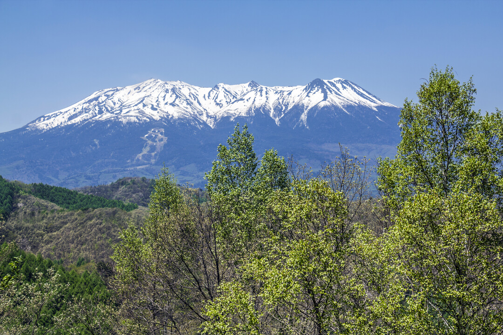
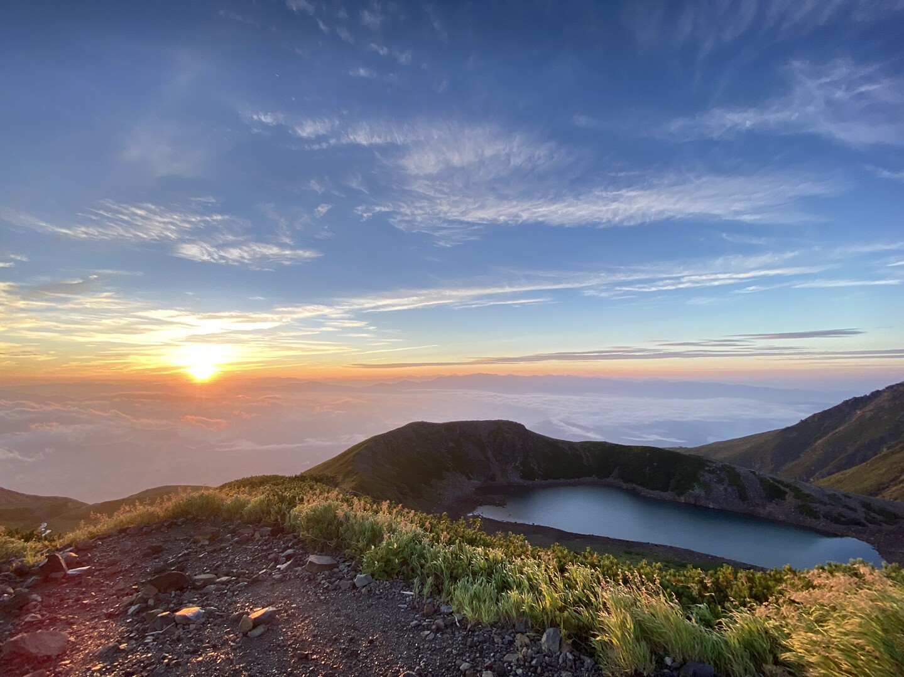

霊峰 御嶽山
北アルプス・穂高連峰から乗鞍岳をはさみ、その最南端に位置する独立峰。富士山、白山とともに「日本三大霊峰」の一つに数えられます。


巌立峡・がんだて公園

5万4千年前、御嶽山の大噴火によって流れ出した溶岩が冷えて固まり、形成された巨大な岩壁「巌立」。高さ72m、幅120mにも及ぶ柱状節理の造形は、圧倒的な迫力です。

がんだて公園は、この巨大な岩壁を間近に望める絶景ポイント。ここから深い森の世界へと誘います。
三ッ滝・滝めぐり

がんだて公園から整備された遊歩道を歩くこと数分。現れるのは、三段になって流れ落ちる「三ッ滝」です。森のマイナスイオンが心身を癒やしてくれます。
散歩・ウォーキング・釣り
奥田屋のすぐそば、大洞川のせせらぎとともに過ごす贅沢。
近くにお薬師様、大洞川にかかる橋を渡ると支流沿いの遊歩道やサイクリングロードもあります。心身を整えるウォーキングに最適です。
また、大洞川で釣りを楽しまれるのも、湯屋温泉ならではのお勧めです。釣った魚を味わう、そんな豊かな時間をお楽しみください。